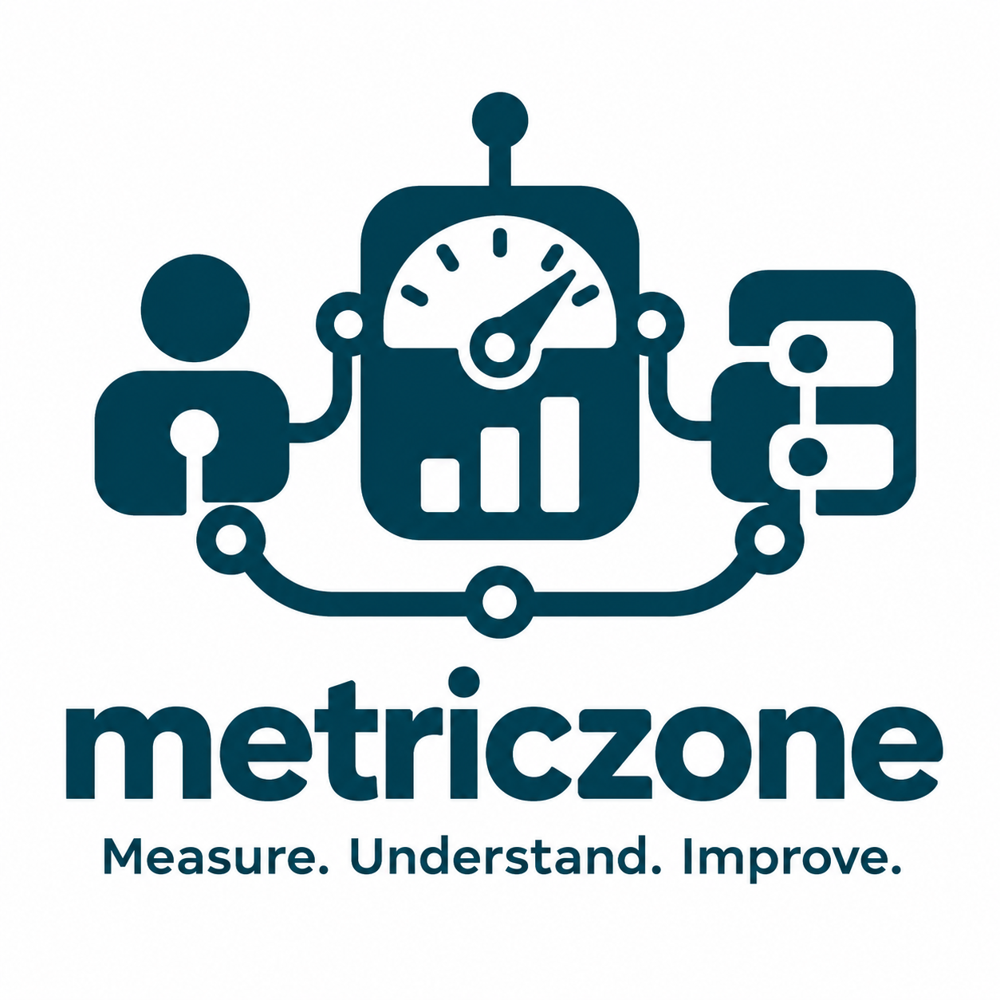

Measurement programs
Design and evolve measurement across teams and organizations, with clear ownership and a shared purpose.
- Stakeholder information needs
- Measures and decision criteria
- Deployment and evolution
Measurement with purpose
Connect measurement with the decisions that matter. Bring clarity to your products, processes, and organization.

What we do
Useful measurement starts with a question someone needs to answer. We connect that question to reliable data, meaningful indicators, and a clear course of action.
Design and evolve measurement across teams and organizations, with clear ownership and a shared purpose.
Connect instruments, data, analysis, and visualization so that indicators support informed decisions.
Understand what changes, what matters, and where to improve across software and AI-supported engineering.
Our approach
Measurement is a system of people, information, and technology. Its value comes from how well those parts work together.
Who needs to know what, and which decision will that information support?
Define what to measure, how to measure it, and how to interpret the result.
Deliver trustworthy information in a form people can understand and act on.
Review value, effort, and changing needs. Adapt the program as the organization evolves.
Where should we focus quality improvement?
Connect defect trends and their impact to product context, release changes, and the people who can act on them.
Development, Management and Evolution
Research into practice
Metriczone draws on the ideas in Software Development Measurement Programs by Miroslaw Staron and Wilhelm Meding: connect rigorous measurement with the practical needs of stakeholders.
From metrology and measurement systems to information quality, organizational roles, tooling, and long-term evolution—the whole program matters.
Explore the bookA new area of application
As agents take on more work, the questions expand: what did they achieve, how did they behave, and what did people need to do?
Read the research perspectiveBehind Metriczone
“What do you need to know—and how will you act on it?”
Metriczone is a company concept by Miroslaw Staron, bringing together his work on software measurement, empirical software engineering, and agentic AI.
The guiding principle is simple: measurement should provide value to its stakeholders and evolve with their needs.
Read Miroslaw’s articlesStart with a question
Explore a measurement challenge, a research collaboration, or the role of evidence in your AI-supported workflow.